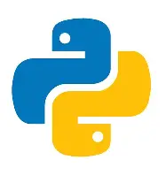
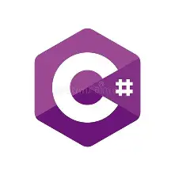
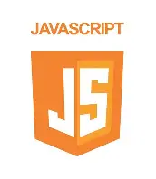
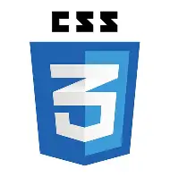

Possédant un bac professionnel en systèmes numériques avec mention très bien, je poursuis mes études en BTS SIO SLAM. J’étudie différentes matières de l’informatique telles que la cybersécurité, la programmation et les ateliers professionnels. En option SLAM, je m’oriente vers le développement d’applications web et logicielles. Sérieux et curieux, je m’investis pleinement dans mon travail et cherche constamment à améliorer mes compétences. J’ai acquis de bonnes bases en langages de programmation au cours de ma formation. Mon objectif est de poursuivre dans le domaine du développement informatique afin d’affiner progressivement mon projet professionnel.

Python : Capable de faire des applications graphiques

C# : Programmation orientée objet
PHP : Capable de traiter des données de formulaires web
HTML : Capable de créer une structure stable de site web

Javascript : Capable de créer des fonctions dynamiques dans une page web

CSS : Capable de faire une mise en page web